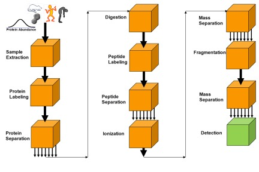
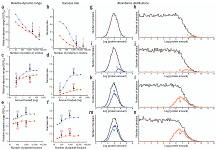

|
|
|
|
Modeling Experimental Design for Proteomics
The proteomics researcher that aims at comprehensive proteome
analysis using mass spectrometry (MS)-based methods will face
experimental challenges. These challenges are due to the complexity
of the proteome and the large concentration
differences between different proteins. In contrast, MS detection methods typically
employed in proteomics have a detection limit, dynamic range, and speed that
hampers the identification and quantitation of
low-abundance proteins in a complex mixture. A good experimental design for proteomics
should manage to keep the detection of low-abundance
proteins and the cost for instrumentation and analysis at reasonable
and desired levels.There are many
choices available for each step in the proteomics workflow, and this makes the
parameter space for the workflow design large. Optimization of experimental design in the large parameter
space by relying on experiments only would be prohibitively
expensive, and it is therefore bound to yield an incomplete
investigation. Instead, we use a simulation-based
optimization approach that employs an experimental model.
This approach can be used to evaluate the success of current
designs, predict the performance of future, and further optimized
proteomics experimental designs.
|

|
| Figure 1. Generalized model of a proteomics experiment. |
|

|
Figure 2. Simulations of proteome analysis of Homo sapiens. (a–f) Relative dynamic range, RDR30, as a function of experimental design parameters (a,c,e).
Success rate as a function of experimental design parameters (b,d,f). (g–n) The distributions of protein abundances (black) and the distributions of detected
proteins (blue for tissue and red for body fluid) for selected experimental design parameter sets (I–IV). In the first selected experimental design parameter
set (I) the sample contains 30,000 proteins (no protein separation) and the proteolytic peptides are separated into 100 fractions with an RPC column loaded
with 0.1 µg of peptides. The influence of different degrees of protein separation is shown in a and b. It is seen that a change from a design that analyzes
digests of 30,000 proteins (I), to a design that analyzes digests of 3,000 proteins (II) yields a valuable improvement of the RDR30 (a) and the success
rate (b). The effect of increasing the amount of peptides loaded onto the column is shown in c and d. Important gains in the RDR30 (c) and the success rate
(d) are obtained by increasing the amount loaded from 0.1 µg (II) to 10 µg (III). The effect of improving the peptide separation is shown in e and f. As the
peptide separation is enhanced from yielding 100 fractions (III) to 1,000 fractions (IV) a substantial fraction of the human tissue proteome can be detected,
whereas the detection from the body fluid still displays only moderate success. Based on the measurements on yeast in Ref. 1, we assumed that the shape
of the protein-abundance distributions is Gaussian (σ = 0.6) for tissue and semi-Gaussian (σ = 1.2) for body fluid ranging six and twelve orders of magnitude
(±5?), respectively. The semi-Gaussian distribution takes into account that many different proteins can be secreted in low amounts into a body fluid. The
total and pre-column survival probabilities were 10% and 90%, respectively. The MS detection sensitivity was 1 fmol and the MS dynamic range was 102. |
References
J. Eriksson, D. Fenyö, "Modeling experimental design for proteomics", Methods Mol Biol 673 (2010) 223-30.
J. Eriksson, D. Fenyö, "Improving the success rate of proteome analysis by modeling protein-abundance distributions and experimental designs". Nature Biotechnology 25 (2007) 651-655.
|
|
|